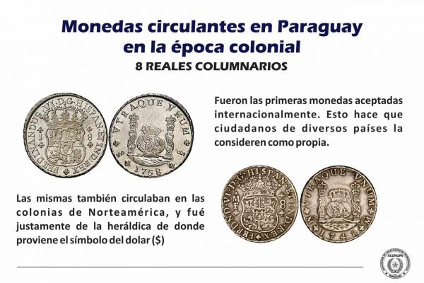
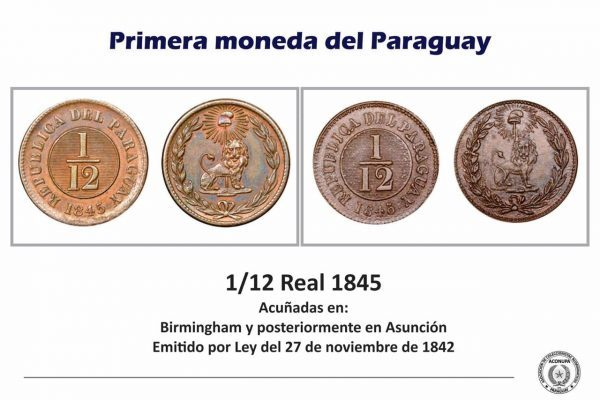

Historia de la moneda
El 5 de octubre de 1943, el Decreto ley n.º 655 del gobierno de Higinio Morínigo establece el «Régimen Monetario Orgánico de la República del Paraguay», cuyas finalidades fundamentales entre otras eran, instituir una nueva unidad monetaria a fin de asegurar la estabilidad, fortalecerla y reafirmar la independencia y soberanía monetaria, reemplazando al peso paraguayo.
Cada guaraní equivalía a 100 pesos paraguayos en ese entonces. En ese contexto, el entonces Banco de la República del Paraguay, actualmente Banco Central del Paraguay, determinó los materiales, el diseño, las leyendas y demás características de los billetes y las monedas.
Se instituyó el nombre de «guaraní» para la nueva unidad monetaria creada, siendo dividido en 100 partes iguales, denominados céntimos. Los billetes y monedas con la nueva denominación se encuentran en circulación desde el año 1944 hasta nuestros días. Cabe señalar que la primera emisión (año 1944), correspondió al Banco del Paraguay.
A partir del año 1952, con la creación del Banco Central del Paraguay, por Decreto Ley Nº18 del 25 de marzo de 1952, la emisión de billetes fueron ya efectuadas por el propio Banco Central del Paraguay. En la actualidad las emisiones se efectúan en virtud de la Ley 489/95, Orgánica del Banco Central del Paraguay, del 29 de junio de 1995.
Actualidad
En 1998 se emitieron los primeros billetes de 100,000 guaraníes, siendo este el actual billete de mayor valor. En aquel entonces, este billete valía unos 40 USD aproximadamente. Para principios del año 2020, este billete valía aprox. 16 dólares estadounidenses (USD) o 14 euros, lo que denota la devaluación de la moneda en las últimas décadas.
En el siglo XXI, empezaron a emitirse las primeras monedas de 1,000 guaraníes en 2006 (reemplazando así al billete del mismo valor años después). Así mismo, se emitieron por primera vez los billetes de 20,000 guaraníes en 2005, y los primeros billetes de 2,000 guaraníes en 2008 (de polímero). En 2006 se acuñaron nuevas monedas de 50, 100, 500 y 1,000 guaraníes, de diferentes tamaños, todas de níquel y acero. Salieron a circulación en 2007 y siguen vigentes hasta ahora.